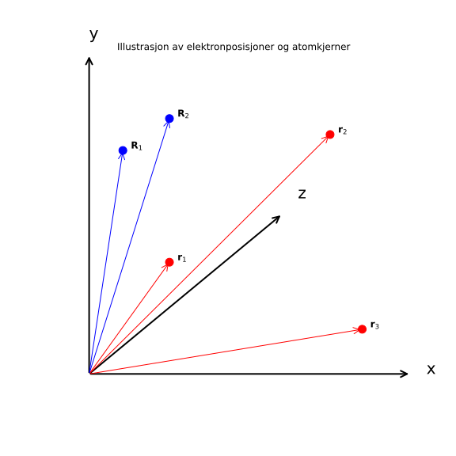
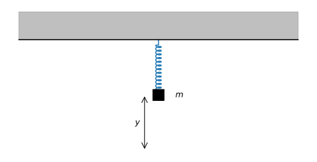
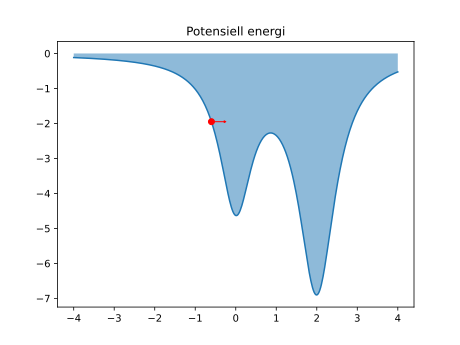
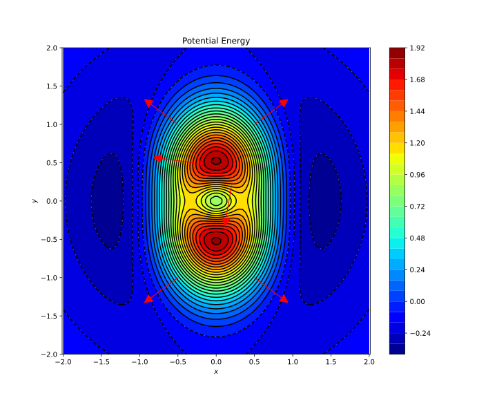

I dette kurset skal vi tenke som fysikere, og betrakte atomer og molekyler som systemer av partikler som følger kvantemekanikkens lover. Men kvantemekanikk bygger på klassisk mekanikk, og dessuten er det slik at atomkjernene som regel kan behandles som klassiske partikler. Derfor tar vi en liten sesjon hvor vi diskuterer atomer og molekyler som klassiske partikler - selv om vi det at dette er "feil".
Et molekyl består av flere elementærpartikler:
Protonene og nøytronene -- nukleoner -- er så sterkt klumpet sammen av den sterke kjernekraften at de utgjør en enhet som er veldig vanskelig å dele opp - atomkjernen. Atomkjernen består av
Nøytronene er elektrisk nøytrale, mens protonene er ladet, med ladning
Selv om kjernene er så ekstremt små, er nesten all atommassen konsentrert der. Det er vanlig å ignorere utstrekningen til kjernene, og anta at de er punktpartikler.
Elektronene på sin side er elementærpartikler, og så langt vi vet er de punktpartikler. De har ingen målbar utstrekning! Elektronene har ladning

Når vi behandler molekylpartiklene klassisk har de en veldefinert posisjon og hastighet til et hvert tidspunkt. Partiklene vekselvirker, det vil si at de påvirker hverandre med krefter, ved Coulombs lov. Til hvert elektron
Disse veiene bestemmes av Newtons andre lov:
Akselerasjonen
For å gjøre livet litt enklere en stund, så velger vi en matematisk notasjon som ikke skiller mellom elektroner og atomkjerner. De er tross alt "like" i den forstand at de er partikler med masse og ladning og neglisjerbar utstrekning. Så nå bruker vi
Merk at
Til enhver kraft fra ett legeme på annet tilsvarer en like stor og motsatt rettet kraft fra det andre legemet på det første.
Nå har vi ingrediensene vi trenger for å skrive ned bevegelseslikningene til et system av ladede partikler. Betrakt partikkel nummer
Så, tenker vi oss at vi starter i
Nå skal vi beskrive det som kalles Hamiltons bevegelseslikninger. Dette er en elegant omskriving av Newtons 2. lov for konservative systemer, det vil si systemer der kreftene er gitt som gradienter av potensiell energi.
Vi legger merke til at dersom vi definerer total potensiell energi gitt som
Vi ser nå at
Merknad: Vi kan abstrahere enda litt mer, og definere et faserom
Vi definerer den symplektiske matrisen
Bevaring av energi: Hamiltons bevegelseslikninger er nyttige. For eksempel er det ganske greit å regne ut at total energi er bevart. Den totale energien skriver vi som
Den hamiltonske formalismen er viktig, for det er denne som er utgangspunktet for kvantemekanikken.
Det kan være instruktivt å se på den klassiske bevegelsen av 1-elektronsystemer. Vi velger å sette massene til atomkjernen til uendelig, slik at det bare er elektronet som beveger seg. Vi vil se på hydrogenatomet og
For H-atomet setter vi protonet i origo, og grunnet symmetri vil elektronet bevege seg i et plan, som vi velger til å være
Elektronets potensielle energi er
Bevegelsen til elektronet i H-atomet har velkjente løsninger, og sammenfaller med bevegelsen av en planet rundt en sol, siden gravitasjonskrefter har samme form som Coulombkrefter. Slik "Kepler-bevegelse" er periodiske ellipsebaner, med solen i ett av fokalpunktene dersom total energi er mindre enn null, parabelbaner dersom energien er null, og hyperbolske baner dersom energien er større enn null.
Vi ser på en Jupyter notebook-demo (classical_molecule_dynamics.ipynb), der vi løser bevegelseslikningene med numeriske metoder - her den såkalte leapfrog-metoden. Vi løser faktisk her 2-partikkelproblemet. Vi ser at vi får periodiske fine baner, og at det svært tunge protonet ligger mer eller mindre i ro under hele dynamikken.
Vi kan endre litt på initialhastigheten til elektronet. Da er ikke lenger banen sirkulær, men elliptisk, med protonet i ett av fokusene.
For
I notebooken ser vi en ganske forvirrende bane, og etter et par-tre runder så stikker elektronet rett og slett av etter å ha kommet for nærme et proton. Dette er et vekjent fenomen innen trelegemeproblemet: Systemet er ustabilt og på ett eller annet tidspunkt vil partikler bli sendt ut mot uendelig.
Husk at dette er klassiske simuleringer. Molekyler er kvantemekaniske, og det er et ganske dypt faktum at mangelegemeproblemet er stabilt når det er kvantemekanisk. Årsaken til dette kan sies å være Heisenbergs uskarphetsrelasjon, men dette kommer vi tilbake til senere.
Vi startet med et system av ladde partikler og endte opp med en Hamiltonfunksjon og Hamiltons likninger for bevegelse. På en måte kan vi jo si at Coulomb-kreftene er alt vi trenger, dersom vi antar at vi ønsker å skrive ned bevegelseslikningene til et fysisk system. Alt er atomkjerner og elektroner! Eller er det det ... ?
For det første er det enormt komplisert å skrive ned bevegelseslikningene til, for eksempel, en kaffekopp dersom vi insisterer på at alle atomene skal være med. På den annen side finnes det mer enn atomer i den klassiske verden vi må beskrive - vi har også elektromagnetiske krefter.
Vi starter med det første temaet. Hamiltons likninger kan brukes også til å modellere generelle klassiske systemer, slik som en kopp, en pendel, you name it. Så lenge vi kan skrive ned en Hamiltonfunksjon kan vi utlede bevegelseslikninger og i prinsippet løse disse. Vi skal ta for oss ett eksempel som hjelper oss med intuisjonen: en 1-dimensjonal harmonisk oscillator, som modellerer en mekanisk fjær.
Se for deg en fjær fastspent i taket, med et lodd med masse

Kreftene som fjæra yter på loddet kan til en god approksimasjon skrives som
Videre vet vi at loddet i bevegelse har kinetisk energi
Hamiltons likninger lyder nå:
Den generelle løsningen til bevegelseslikningen er standard innen difflikningsteori, og er
Det er nyttig å visualisere
Vi kan også si at den minste potensielle energien er
Dersom vi animerer fjærbevegelsen i potensial-plottet legger vi merke til at det på en måte ser ut som om massen "sklir" på en berg og dalbane med høyde

Går vi til en 2-dimensjonal bevegelse, er
